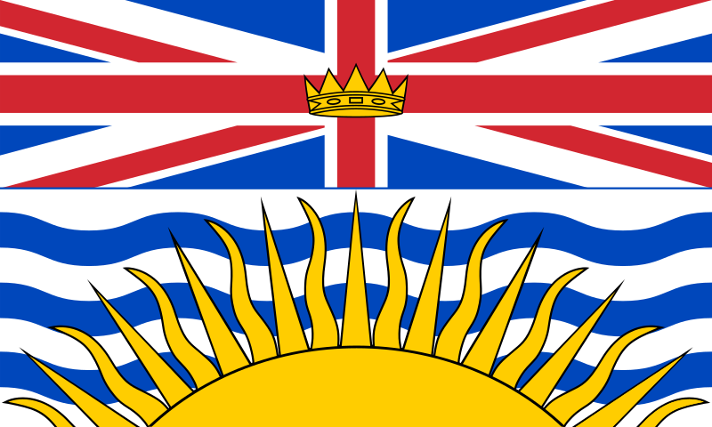
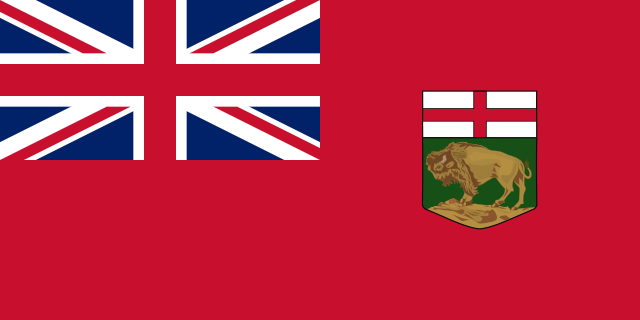
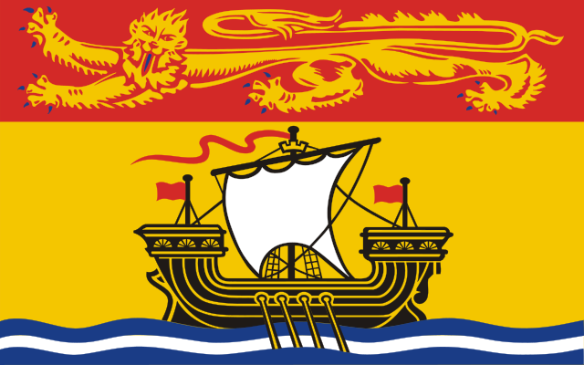
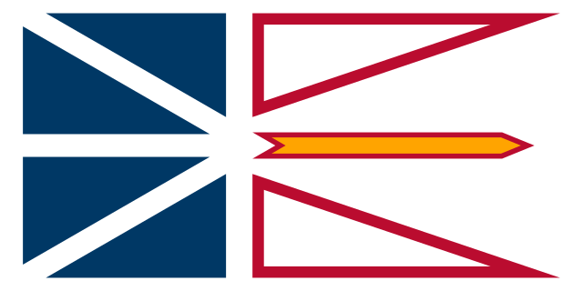
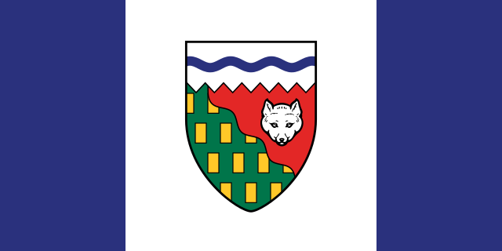
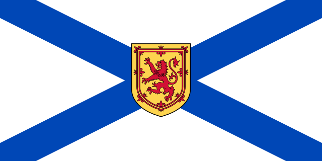
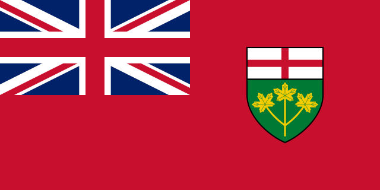
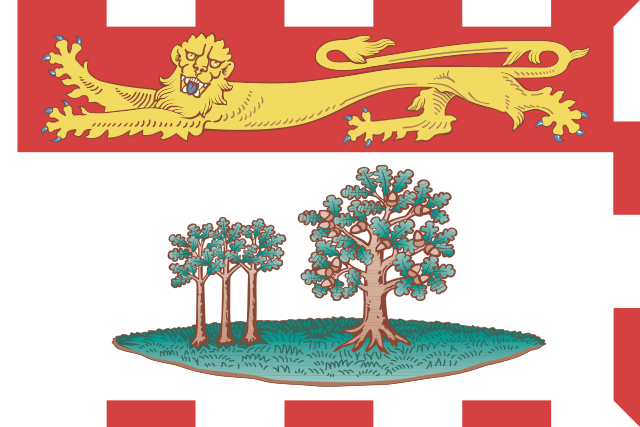
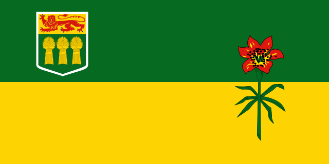
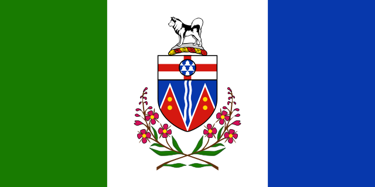

HOME
Canada
Alberta

British ColumbiaColombie-Britannique

Manitoba

New BrunswickNouvelle Brunswick
Federal AgenciesAgences Fédéral

Newfoundland and LabradorTerre-Neuve-et-Labrador

Northwest TerritoriesTerritoires du Nord-Ouest

Nova ScotiaNouvelle-Écosse
Nunavutᓄᓇᕗᑦ

Ontario

Prince Edward islandÎle-du-Prince-Édouard
QuébecQuebec

Saskatchewan

Yukon
Transit Agencies